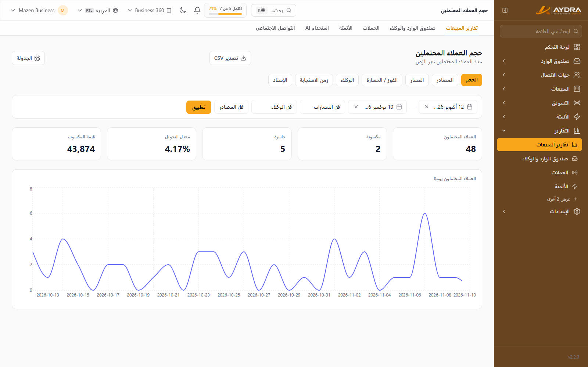
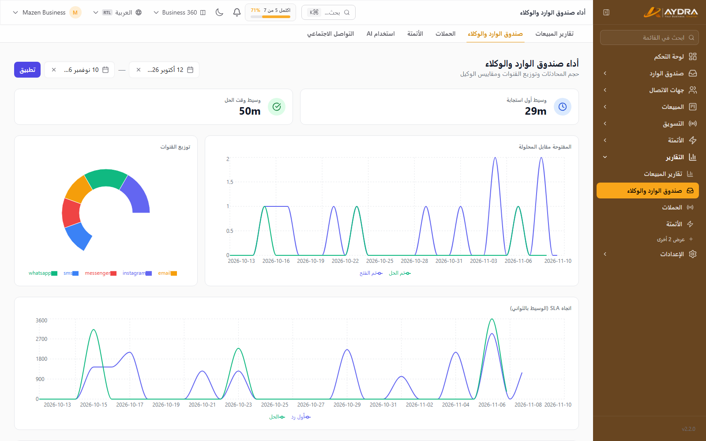
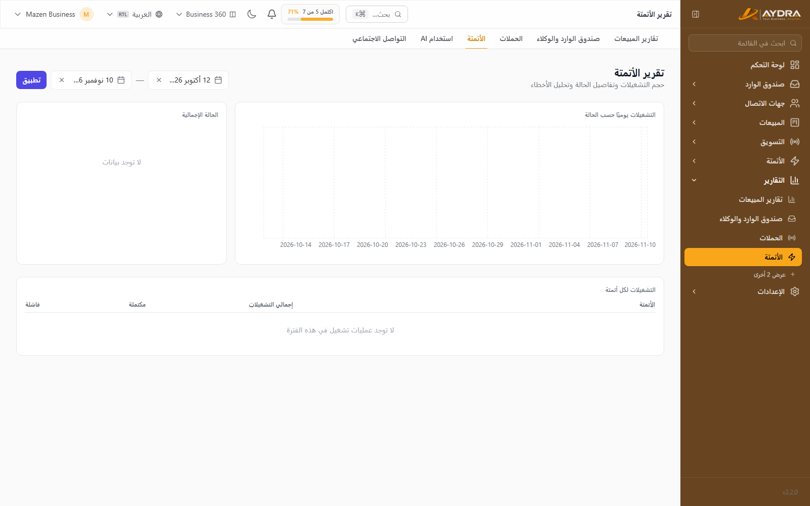
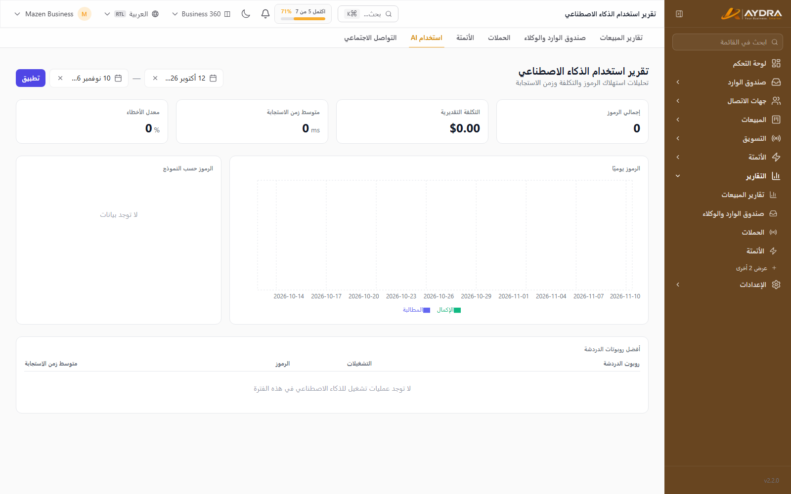
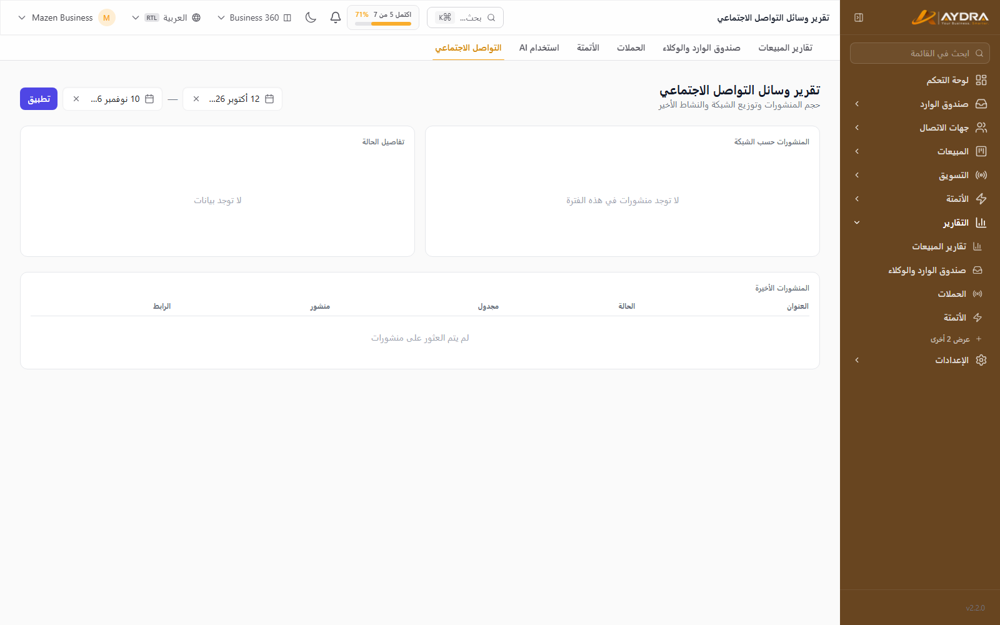

التقارير والتحليلات
الأرقام لا تكذب — لكن يجب قراءتها في السياق. هذا الدليل يشرح كل تقرير متاح، ومتى تستخدمه، وكيف تصدّره أو تجدوله ليصل إلى بريدك تلقائيًا.
تقارير المبيعات السبعة (Volume, Sources, Win/Loss, Agents, Response, Pipeline, Attribution) تحتاج ميزة Sales Reports في باقتك. تقارير المحادثات والحملات والأتمتة والذكاء الاصطناعي والسوشيال متاحة حسب الباقة أيضًا — لو لم تظهر الشاشة، فهي غير مشمولة.
1. من أين تبدأ؟
كل التقارير تحت قسم التقارير في القائمة الجانبية:
| التقرير | يجيب على سؤال |
|---|---|
| المبيعات | هل نبيع أكثر؟ ومن يبيع؟ ومن أين تأتي الصفقات؟ |
| المحادثات (Inbox) | هل نردّ بسرعة؟ وما حجم العمل على الفريق؟ |
| الحملات | أي حملة وصلت فعلًا وأيها فشلت؟ |
| الأتمتة | هل السيناريوهات تعمل أم تفشل؟ |
| الذكاء الاصطناعي | كم نستهلك من التوكنز وأين تذهب؟ |
| السوشيال | كيف أداء المنشورات والحسابات؟ |
كل تقرير يبدأ بفلتر الفترة الزمنية. غيّر الفترة أولًا قبل قراءة أي رقم — معظم الالتباس سببه مقارنة فترات مختلفة.
2. تقارير المبيعات

2.1 حجم المبيعات (Volume)
عدد وقيمة الصفقات على مدى الزمن، مع تفصيل حسب المرحلة والحالة.
- استخدمه لـ: قياس الاتجاه الشهري (Trend) ومعرفة أفضل الشهور.
- راقب: هل القيمة ترتفع بينما العدد ثابت؟ (يعني متوسط الصفقة يكبر).
- يمكن تجميع النتائج حسب اليوم/الأسبوع/الشهر.
2.2 المصادر (Sources)
من أين يأتي الليدز والصفقات: Scraper، Form، Campaign، Manual، وغيرها.
- يعرض عدد الليدز لكل مصدر ونسبة التحويل إلى صفقة.
- يساعدك على إيقاف المصادر الغالية وتكثيف المصادر الرابحة.
- يعتمد على تسجيل المصدر عند إنشاء الليد — تأكد أن النماذج والحملات مربوطة بمصدر.
2.3 الفوز والخسارة (Win/Loss)
الصفقات الرابحة مقابل الخاسرة، مع أسباب الخسارة إن سُجّلت.
- يرشدك لأسباب الخسارة المتكررة (السعر، التوقيت، المنافس).
- شجّع الفريق على تسجيل سبب الخسارة عند إغلاق الصفقة — بدونه التقرير نصف مفيد.
2.4 أداء الوكلاء (Agents)
لكل عضو في الفريق: عدد الصفقات، القيمة، معدل الفوز، ومتوسط زمن الإغلاق.
- استخدمه في المتابعة الشهرية والتوزيع العادل للليدز.
- احذر من قراءة الأرقام بمعزل عن نوع الليدز الموكلة لكل وكيل.
2.5 سرعة الاستجابة (Response)
الوقت بين وصول الليد/الرسالة وأول رد بشري.
- الردّ في أول 5 دقائق يرفع التحويل بوضوح.
- راقب الليدز التي لم يُرد عليها إطلاقًا.
2.6 خط الأنابيب (Pipeline)
توزيع الصفقات على المراحل وقيمتها المتوقعة (Weighted Value).
- يكشف الاختناقات: مرحلة تتكدّس فيها الصفقات دون تقدّم.
- استخدمه في اجتماع المبيعات الأسبوعي.
2.7 الإسناد (Attribution)
ربط الصفقة بالقناة أو الحملة أو UTM التي جاء منها العميل.
- يعتمد على روابط UTM ومصادر الليدز.
- بدونه ستعرف أن لديك مبيعات، لكن لن تعرف من أين جاءت.
3. تقرير المحادثات (Inbox)

من التقارير ← المحادثات:
- عدد المحادثات الجديدة والمحلولة والمؤجّلة.
- متوسط أول رد ومتوسط زمن الحل.
- التوزيع حسب القناة (واتساب/إنستجرام/ماسنجر/SMS/بريد).
- حجم العمل لكل وكيل.
لو كان متوسط أول رد مرتفعًا، جرّب الإسناد التلقائي أو ردًّا تلقائيًا فوريًا يطمئن العميل ثم يوزّع المحادثة.
4. تقرير الحملات
من التقارير ← الحملات أو من صفحة الحملة نفسها:
- المستهدفون، المُرسل، الفاشل، والمقروء (حسب القناة).
- تفصيل الفشل حسب السبب (رقم غير صالح، قالب مرفوض، حد القناة…).
- تصدير قائمة المستلمين (CSV) لتحليلها خارجيًا.
- مقارنة الحملات ببعضها لمعرفة أفضل نص/توقيت.
5. تقرير الأتمتة

من التقارير ← الأتمتة:
- عدد مرات التشغيل لكل سيناريو.
- نسبة النجاح والفشل، والخطوة التي تفشل عندها.
- متوسط زمن التنفيذ.
- أكثر الأخطاء تكرارًا.
استخدم زر الانتقال إلى سجل التشغيل من التقرير لرؤية تفاصيل كل تشغيل فاشل.
6. تقرير الذكاء الاصطناعي

من التقارير ← AI:
- إجمالي التوكنز المستهلكة والمتبقية من الحد الشهري.
- التفصيل حسب الميزة: شات بوت، رد AI في الأتمتة، AI SDR، مستشار الليد، تلخيص المكالمات، توليد المنشورات.
- التكلفة التقديرية إن كانت مفعّلة.
- عدد الطلبات الفاشلة (مفتاح غير صالح، تجاوز حد، خطأ مزوّد).
عند الاقتراب من حد التوكنز، توقف الميزات الجديدة عن العمل لكن البيانات القديمة تبقى. راقب التقرير أسبوعيًا لو تستخدم AI SDR أو الشات بوت بكثافة.
7. تقرير السوشيال

من التقارير ← السوشيال:
- عدد المنشورات لكل شبكة (منشور/مجدول/فاشل).
- أداء المنشورات حسب الشبكة.
- أسباب فشل النشر (توكن منتهٍ، صلاحية ناقصة، محتوى مرفوض).
8. التصدير إلى CSV
معظم الشاشات فيها زر تصدير. الملفات المتاحة:
| الملف | المحتوى |
|---|---|
| جهات الاتصال | كل جهات الاتصال بحقولها ووسومها وشرائحها |
| مستلمو حملة | حالة كل مستلم في حملة معيّنة |
| المحادثات | بيانات المحادثات وحالتها وقناتها |
| تشغيلات AI | الطلبات والتوكنز والنتيجة |
| سجل التدقيق | كل العمليات الإدارية (للمدير) |
| تقارير المبيعات | لكل تقرير زر تصدير مستقل |
الملفات بترميز UTF-8. لو ظهرت العربية غير مقروءة في Excel، افتح الملف عبر Data ← From Text/CSV واختر UTF-8.
9. التقارير المجدولة بالبريد
من التقارير ← المبيعات ← التقارير المجدولة:
- اضغط جدولة جديدة.
- اختر نوع التقرير (Volume, Sources, Win/Loss, Agents, Response, Pipeline, Attribution).
- اختر التكرار: يومي / أسبوعي / شهري.
- أدخل بريد المستلمين (مفصولة بفاصلة).
- أضف فلاتر اختيارية: خط أنابيب، وكيل، مصدر.
- احفظ — سيصل التقرير تلقائيًا كملف مرفق في الموعد.
يمكنك تعديل الجدولة أو حذفها في أي وقت من نفس الشاشة.
إرسال التقارير المجدولة يعتمد على سيرفر البريد (SMTP) الخاص بك وعلى تشغيل الـScheduler على السيرفر. لو لم تصل التقارير، راجع SMTP أولًا ثم اسأل مسؤول المنصة عن الـCron.
10. نصائح لقراءة صحيحة
- ثبّت الفترة: لا تقارن شهرًا كاملًا بأسبوع.
- اقرأ المصدر مع النتيجة: صفقة رابحة واحدة قد تُجمّل تقرير وكيل لشهر.
- راقب الاتجاه لا الرقم: ثلاث نقاط متتالية أهم من قفزة واحدة.
- اربط التقارير: Response + Agents + Win/Loss معًا تعطي صورة حقيقية.
- سجّل أسباب الخسارة: بدونها يبقى Win/Loss ناقصًا.
أخطاء شائعة
| المشكلة | السبب | الحل |
|---|---|---|
| تقرير المبيعات لا يظهر | ميزة Sales Reports غير مشمولة | راجع الباقة ورقّها إن لزم |
| أرقام فترة سابقة تغيّرت | تعديل/حذف بيانات قديمة أو إعادة تصنيف | التقارير تُحسب لحظيًا من البيانات الحالية |
| Attribution فارغ | لا توجد UTM أو مصادر مسجّلة | أضف مصادر وروابط UTM للحملات |
| تقرير AI يظهر صفر | لا يوجد مزوّد مفعّل أو لا استخدام | راجع مزوّدي AI والإعدادات |
| التقرير المجدول لا يصل | SMTP غير مضبوط أو Scheduler متوقف | اختبر SMTP واطلب مراجعة الـCron |
| CSV بعربية مشوّشة | Excel يفتحه بترميز خطأ | افتحه كـUTF-8 من Data ← From Text/CSV |
الخطوة التالية: اضبط الفريق والفوترة والأمان في دليل إدارة الحساب واستكشاف الأخطاء.